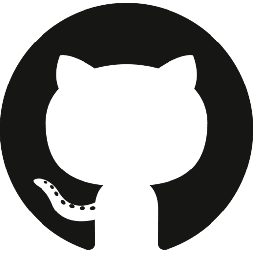

Follow the Bit

About Bit
Bit is a decentralized cryptocurrency based on the Bitcoin protocol. Launched with the vision of offering a secure, fast, and scalable digital currency, Bit aims to provide a transparent and community-driven alternative to traditional financial systems. It uses the proven SHA-256 Proof of Work algorithm for consensus, ensuring both security and fairness for miners and users alike.
The genesis block of Bit was mined on December 16, 2024, marking the beginning of a new era for the Bit blockchain. With its limited supply of 2.1 million coins and a block reward of 5 BIT, Bit is designed to provide scarcity, ensuring long-term value and stability. Through continuous development and community involvement, Bit aims to be a versatile cryptocurrency for various use cases.
The Bit blockchain follows a strict emission schedule, with block halvings occurring every 210,000 blocks, ensuring controlled inflation and predictable supply over time.
Genesis Message: "Bitcoin smashes 100,000 USD"
Specifications
| Algorithm: | SHA-256 Proof of Work |
| Ticker: | BIT |
| RPC port: | 20971 |
| P2P port: | 20972 |
| Block reward: | 5 BIT |
| Block time: | 1 Minute |
| Block halving: | 210000 blocks |
| Coin supply: | 2100000 BIT |
Reward Schedule
| Halvings | Reward | Blocks | Mined | Days |
|---|---|---|---|---|
| 0 | 5 | 210,000 | 1,050,000 BIT | 146 |
| 1 | 2.5 | 420,000 | 1,575,000 BIT | 292 |
| 2 | 1.25 | 630,000 | 1,837,500 BIT | 438 |
| 3 | 0.625 | 840,000 | 1,968,750 BIT | 584 |
| 4 | 0.3125 | 1,050,000 | 2,034,375 BIT | 729 |
Note: Initial reward and 4 halvings will take approximately 729 days, or just under 2 years (about 1 year and 364 days).
Target
Bit is for everyone, whether new to crypto or an experienced enthusiast, offering simplicity and inclusivity:
For Newcomers: A straightforward entry into blockchain and cryptocurrency.
For Latecomers: A chance to participate in a unique, limited-supply project.
For Miners: An opportunity to use your SHA-256 ASICs and support a fast-growing network.
Why Bit?
With only 2.1 million coins and a 1-minute block time, Bit is 10 times faster and scarcer than Bitcoin. Starting with a 5-coin block reward, it’s a perfect balance for miners and holders alike.
Put Your ASICs to Work
Don’t let your ASICs gather dust—mine on the Bit network and support the project while benefiting from its fast, efficient blockchain.
Follow the Bit
Join us to build value together — be a part of the Bit network today!
Donate Bit
We only accept donations in Bit for future development at the following address:
bit1qu837wrm5ufhwdseelstvq6myd4lvx4eq48we09
List of supported exchanges
Join us
